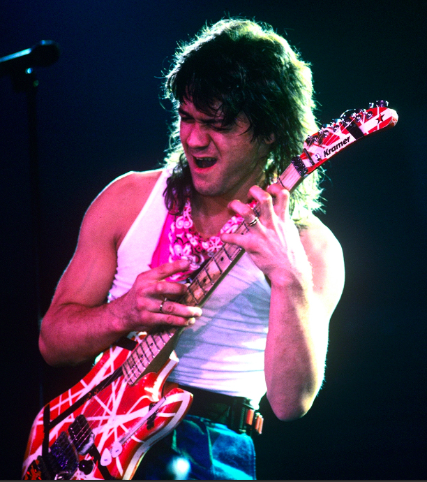

Home
Sobre
Equipamento
Loja
Contato
Eddie Van Halen
Eu sou Eddie Van Halen, guitarrista, músico, curioso, acabei mexendo e modificando meus equipamentos e minha maneira de tocar criando novas formas de enxergar o universo da música.
Fui o primeiro guitarrista a modificar minha guitarra adaptando para aquilo que eu precisava, transformei a "Strat" numa "Superstrat".
Frankenstrat: corpo de fender, braço de krammer, captador gibson les paul, ponte floyd-rose
